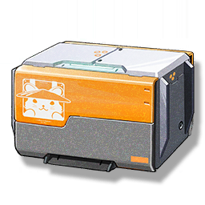

Resonators
Monsters
Weapons
Items
Battlefield Record 6010: 91.7 Highland Contest
Development Materials

An old data chip, can be accessed through the Terminal.
A data chip picked up in the Port City of Guixu, seems to be a battlefield record of a warrior.